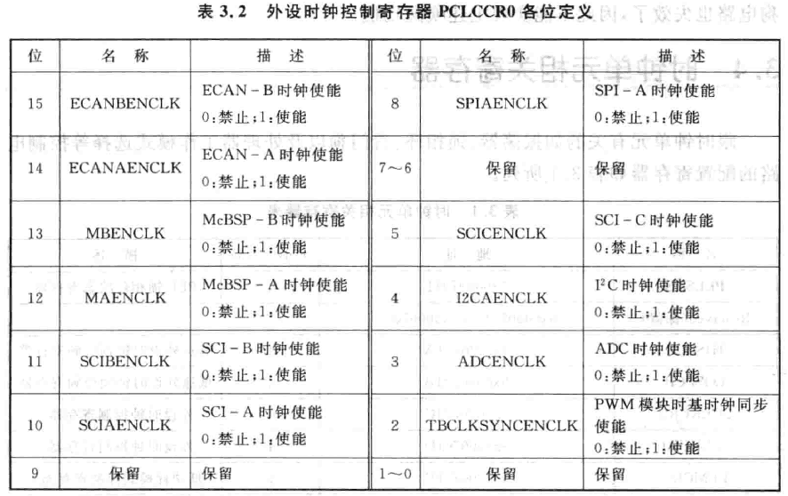
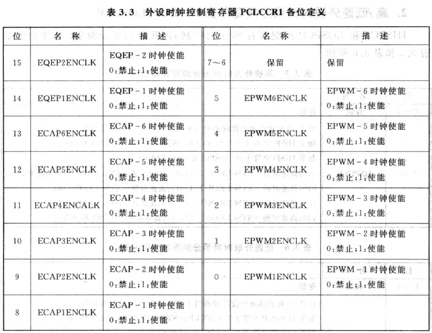
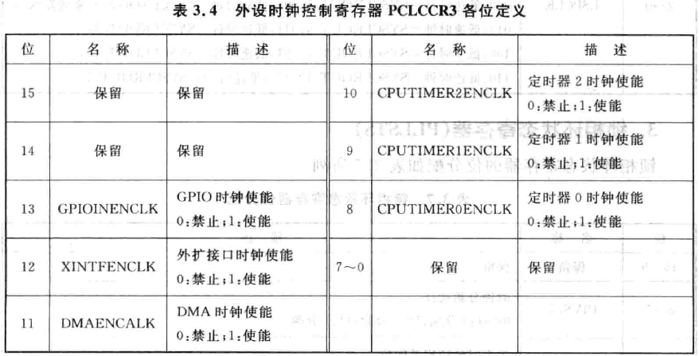
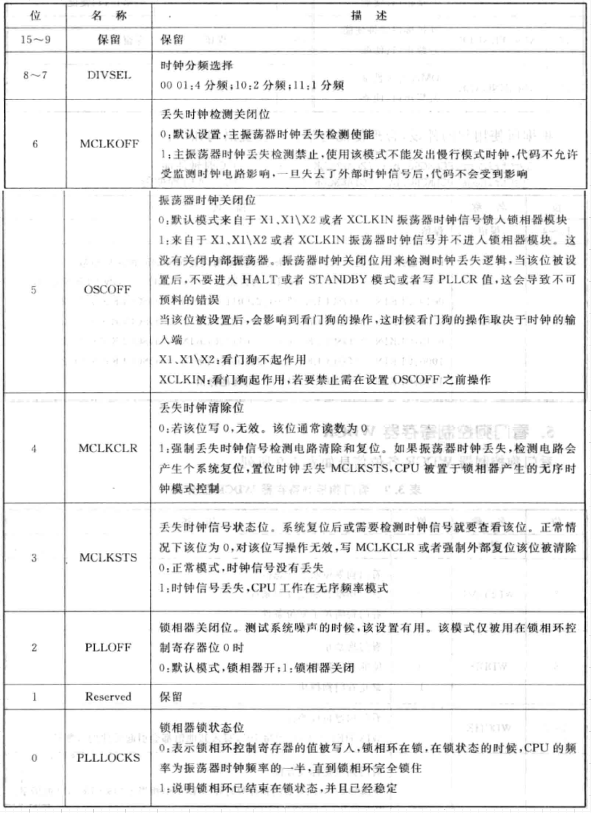
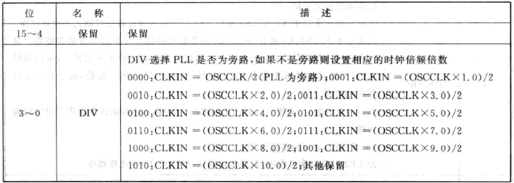
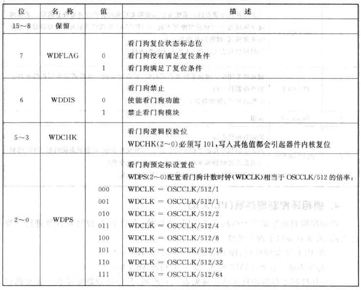
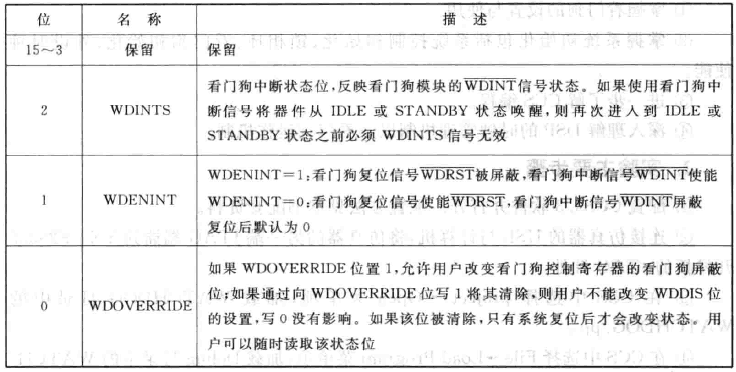
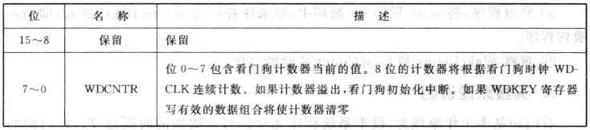
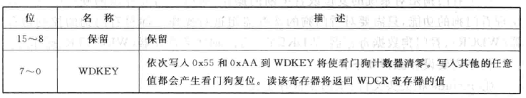

F28335时钟结构
F28335的时钟源有两种：
- 内部振荡器：(更常用)
需要在X1和X2两引脚外接一个30MHz的石英晶体

- 外部时钟源：
有两种方式：
内部时钟电路为：

以内部振荡器作为时钟源为例，
30MHz的时钟信号OSCCLK经过PLL分频后（由PLLCR确定分频系数）
若取分频系数为10，得到300MHz的VCOCLK，
再经过分频后,比如2分频，即得到150MHz的系统时钟CLKIN。
F28335外设时钟

如图，有两种不同的外设时钟：
低速时钟LOSPCP与高速时钟HISPCP
每个外设本身还有自己的预定标时钟设置寄存器，
可对输入的时钟进行进一步的分频/倍频。
一般为了降低功耗，不使用的外设时钟应将其禁止。
看门狗电路

喂狗方式：
给看门狗控制寄存器WDCR写0x55+0xAA。
访问WDCR的安全机制：
所有访问WDCR的写操作，相应校验位WDCHK必须是101，
否则看门狗会拒绝访问并发出复位信号。
前文在F2812的看门狗中有说，
除了正常运行模式，TI DSP的低功耗模式有三种：
空闲(IDLE)、待机(STANDBY)、暂停(HALT)：

当处于STANDBY模式时，所有外设都被关闭，只有看门狗在内部RC时钟信号下运行。
WDINT信号反馈到LPM模块后，
能够将DSP从STANDBY模式唤醒。
类似的，在IDLE模式下，WDINT信号能够向内核产生WAKEINT中断，将内核唤醒。
但是在HALT模式下，看门狗也被关闭，内核将无法自动醒过来。
相关寄存器

外设时钟控制寄存器PCLCCRx(x=0,1,3)



高/低速外设时钟预分频寄存器HISPCP/LOSPCP

锁相环状态寄存器PLLSTS

锁相环控制寄存器PLLCR

PLLCR只能设置倍频系数，分频系数由PLLSTS的DIVSEL位决定。
上表中展示的是在PLLSTS[DIVSEL]=10的情况，即2分频。
在向PLLCR进行写操作之前，需要满足：
- PLL完全锁住，即
PLLSTS[PLLLOCKS]=1
- 芯片不能工作在LIMP模式，即
PLLSTS[MCLKSTS]=0
看门狗控制寄存器WDCR

系统控制和状态寄存器SCSR

看门狗计数寄存器WDCNTR

看门狗复位密钥寄存器WDKEY

看门狗应用实例
1
2
3
4
5
6
7
8
9
|
void ServiceDog(void)
{
EALLOW;
SysCtrlRegs.WDKEY = 0x0055;
SysCtrlRegs.WDKEY = 0x00AA;
EDIS;
}
|
1
2
3
4
5
6
7
8
9
10
11
12
13
14
15
16
17
18
19
20
21
22
23
24
25
26
27
28
29
30
31
32
33
34
35
36
37
38
39
40
41
42
43
44
45
46
47
48
49
50
51
52
53
54
55
56
57
58
59
60
61
62
63
64
65
66
67
68
69
70
71
72
73
74
75
76
77
78
79
80
81
82
83
84
85
86
87
88
89
90
91
92
93
94
95
96
97
98
99
100
101
102
103
104
105
106
107
108
109
110
111
112
113
114
115
116
117
118
119
120
121
122
123
124
125
126
127
128
129
130
131
132
133
134
135
136
137
138
139
140
141
142
143
144
145
146
147
148
149
150
151
152
153
154
155
156
157
158
159
160
161
162
163
164
165
166
167
168
169
170
171
172
173
174
175
176
177
178
179
180
181
182
183
184
185
186
|
#include "DSP28x_Project.h"
#include <bsp/bsp_led.h>
#include "DSP2833x_Device.h"
#include "DSP2833x_Examples.h"
#define FLASH_RUN 1
#define SRAM_RUN 2
#define RUN_TYPE SRAM_RUN
#if RUN_TYPE==FLASH_RUN
extern Uint16 RamfuncsLoadStart;
extern Uint16 RamfuncsLoadEnd;
extern Uint16 RamfuncsRunStart;
#endif
__interrupt void wakeint_isr(void);
void delay_1ms(Uint16 t);
void LED_LOOP();
void LED_ALL_ON();
void LED_ALL_OFF();
Uint32 WakeCount;
Uint32 LoopCount;
void main(void)
{
InitSysCtrl();
#if RUN_TYPE==FLASH_RUN
MemCopy(&RamfuncsLoadStart,&RamfuncsLoadEnd,&RamfuncsRunStart);
InitFlash();
#endif
InitGpio();
DINT;
InitPieCtrl();
IER = 0x0000;
IFR = 0x0000;
InitPieVectTable();
EALLOW;
PieVectTable.WAKEINT = &wakeint_isr;
EDIS;
EALLOW;
SysCtrlRegs.SCSR = BIT1;
EDIS;
PieCtrlRegs.PIECTRL.bit.ENPIE = 1;
PieCtrlRegs.PIEIER1.bit.INTx8 = 1;
IER |= M_INT1;
EINT;
ServiceDog();
LED_GPIO_Config();
SysCtrlRegs.WDCR = 0x006F;
LED_ALL_ON();
LED_ALL_OFF();
LED_LOOP();
LED0(1);
EALLOW;
SysCtrlRegs.SCSR = 0x0002;
SysCtrlRegs.WDCR = 0x002F;
EDIS;
WakeCount = 0;
LoopCount = 0;
for(;;)
{
if(LoopCount <= 1000000){
ServiceDog();
LoopCount++;
}
else {
LED0(0);
}
}
}
__interrupt void wakeint_isr(void)
{
WakeCount++;
if(WakeCount <= 3){
LED1(1);
}
else {
LED1(0);
WakeCount = 0;
}
PieCtrlRegs.PIEACK.all = PIEACK_GROUP1;
}
void LED_ALL_ON(){
LED0(1);
LED1(1);
LED2(1);
LED3(1);
LED4(1);
delay_1ms(1000);
return;
}
void LED_ALL_OFF(){
LED0(0);
LED1(0);
LED2(0);
LED3(0);
LED4(0);
return;
}
void LED_LOOP(){
LED0(1);
delay_1ms(100);
LED0(0);
LED1(1);
delay_1ms(100);
LED1(0);
LED2(1);
delay_1ms(100);
LED2(0);
LED3(1);
delay_1ms(100);
LED3(0);
LED4(1);
delay_1ms(100);
LED4(0);
return;
}
void delay_1ms(Uint16 t)
{
while(t--)
{
DELAY_US(1000);
}
}
|